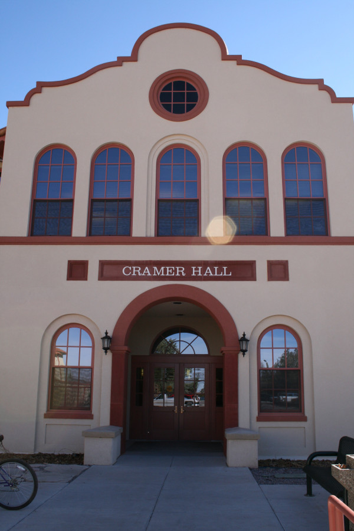

Professor of Computer Science & Engineering • New Mexico Institute of Mining & Technology
Cramer Hall, Dept. of CSE, NMT, Socorro, NM 87801 • hamdy.soliman@nmt.edu
IEEE Member • ACM Lifetime Member • 35+ years at NMT
Publications Google Scholar Research
Dr. Hamdy S. Soliman is a Professor in the Department of Computer Science & Engineering at New Mexico Institute of Mining and Technology (NMT), where he has served on the faculty since 1990, progressing from Assistant Professor to full Professor in 2007. He holds a Ph.D. in Computer Science from New Mexico State University, an M.S. from Florida Institute of Technology, and a B.S. in Computer Science & Engineering from Alexandria University, Egypt.
His research spans machine learning and neural network modeling (LVQ, BP, BAM, Hopfield, ART, KSOFM, Deep Learning), smart & secure wireless sensor networks for early event prediction (forest fires, border intrusion, earthquakes, cancer), network security (five U.S. patents in dynamic encryption), cloud computing management, and big data analytics. He has received funding from NSF, NASA, NMSGC, Sandia National Labs, U.S. Dept. of Defense, LANL, and NMT Research Foundation. As an administrator, he has served as Department Chair, Associate Chair for Research & Graduate Affairs, and Graduate Advisor. He is a long-standing IEEE member and ACM lifetime member, and serves as a reviewer for federal research proposals and international journals.